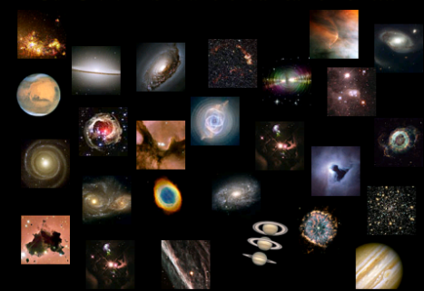

DEVELOPED BY ROBERT ZULU THE PROFESSIONAL PROGRAMMER

Origin of the Universe
• The universe is estimated to be approximately 15 billion years old based on estimates of the rate at which distant galaxies are moving away from us.
•
Astronomers have created a model of the origin of the universe known as the Big Bang in which early galaxies formed from the accumulation of cosmic debris in giant molecular clouds.
•
Stars formed when dense regions in these clouds collapsed inward and planets formed from the accretion of debris in the gravitational field of the stars.
We live on a small rocky planet that circles one of the hundreds of billions of stars in the Milky Way galaxy. The Milky Way is just one of tens of thousands of galaxies embedded in the much larger universe.
Astronomers don't use conventional measures to determine the dimensions of objects in space because of the vast distances involved. Instead they use units known as light years, a measurement that represents the distance light would travel in a year, equivalent to 9,460 billion kilometers (5,870 billion miles).
The Milky Way has a radius of 50,000 light years whereas the edge of the universe is approximately 15 billion light years away.
The Observable universe is a spherical region of the
universe comprising all matter that can be observed from Earth or
its space-based telescopes and exploratory probes at present time,
because electromagnetic radiation from these objects has had time to reach the
Solar system and Earth since the beginning of the cosmological expansion.
There are at least 2 trillion galaxies in the observable universe.
Assuming the universe is isotropic, the distance to the edge of the observable
universe is roughly the same in every direction. That is, the
observable universe has a spherical volume (a ball) centered on
the observer. Every location in the universe has its own observable universe,
which may or may not overlap with the one centered on Earth.
OUR UNIVERSE
COSMOLOGY
Cosmology is the study of nature and origin of
Universe. The scientific aspects of composition, motion,
and other related facts of the universe are studied under
a multidisciplinay subjects called Astronomy.
It is not an experimental science but an observational science.
Astronomy is one of the oldest sciences having practical importance.
It may take generations to complete the census of space.
About 100 billion galaxies with equal number of stars.
Families of planets, satellites, asteroids and planetoids,
all of them exist in a massive space.